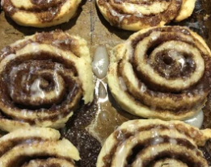

iced buns £0.49

these better be worth it...
ingredients:
- butter
- 'baking mix' whatever that means
- milk from a cow hopefully
- egg
- MARGARINE AS WELL ???? (who tf made this recipe)
- sugar
- cinnamon
- powdered sugar
- more milk !
instructions:
- Preheat oven, grease pan.
- Mix cubes of cold butter with the 'baking mix' until fully coated. Stir in milk and egg.
- omg this one is so long. Turn dough onto cloth covered board generously dusted with 'baking mix'; roll to coat. Fols and knead 10 times. Roll into a 15 x 8 inch rectangle. Spread with softened butted or margarine. Mix suger and cinnamon, and sprinkle over dough. Roll up tightly, beginning at 15 inch side. Pinch edge into roll. Cut into 12 slices with a sharp knife. Place cut sides down in prepared pan.
- Put in oven and cook for 15 mins; cool for 15 mins as well.
- NOW FOR THE ICING: mix powdered sugar and milk lol. Drizzle over buns. Serve...